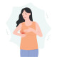

Mastitis
:Rx
.
درمان های غیر دارویی شامل:
▪️کمپرس سرد
▪️عدم قطع شیردهی ( منجر به استاز و تشدید علائم می شود)
▪️خارج کردن شیر با پمپ یا ماساژ دستی
.
نکته : شیر سالم است و منجر به انتقال عفونت نمی شود
نکته : در صورت عدم درمان مناسب می تواند منجر به آبسه شود . در صورت شک توصیه به انجام سونوگرافی و ارجاع جهت تخلیه آبسه می شود
نکته : کلیندامایسین در موارد شدید بیماری توصیه می شود
التهاب بافت پستان ناشی از درگیری میکروبی ( اصولا استاف اورئوس ) .معمولا در ۳ ماه اول شردهی رخ می دهد
علایم
✳️ درد
✳️ تورم
✳️ قرمزی پستان
✳️ تب
✳️ بی حالی و خستگی
✳️ علائم flu like
Breast Engorgement 1️⃣
2️⃣ آبسه
3️⃣ کنسر التهابی پستان
4️⃣ گالاکتوسل
Plugged duct 5️⃣
Duct ectasia 6️⃣
TB 7️⃣
8️⃣ سارکوئیدوز